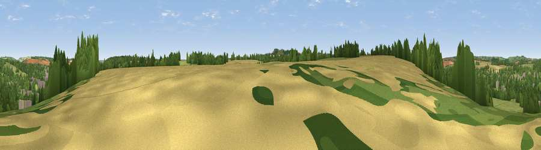

Granham Hill
#41076 in England · top 90% of its area beats it · near MantonThe view, rendered

A 360° render of this exact spot computed from the terrain model, tree cover and land cover — summer colours, afternoon light, calibrated against photographs of famous viewpoints. Real trees, hedges and buildings will differ in detail.
The panorama
Grey silhouette: terrain skyline in each direction (720 bearings, Earth curvature and refraction included). Dashed green: skyline with trees (+15 m) and buildings (+8 m) as obstacles. Blue strip: how far the ground is visible on each bearing.
Where the view opens
Wedge length = distance to the farthest visible ground on that bearing (vegetation-aware). Rings at 10, 25 and 50 km.
What fills the view
47% grassland · 30% woodland · 14% cropland · 9% built-up
Angular shares of the visible panorama (visual magnitude), not map area. Landscape diversity 0.53 (0–1 Shannon).
Key numbers
More beautiful places nearby
The staircase of upgrades: each row has a higher view potential than everything closer. Driving times are estimates from straight-line distance, calibrated against real road routing — check an actual route before setting out.
| Place | Direction | Drive | Score |
|---|---|---|---|
| Viewpoint near Marlborough | E · 0 km | ~1 min | 31.6 |
| Viewpoint near Mildenhall | ENE · 2 km | ~6 min | 32.2 |
| Viewpoint near Mildenhall | ENE · 3 km | ~8 min | 40.6 |
| Martinsell viewpoint | S · 4 km | ~9 min | 77.3 |
| Viewpoint near Nympsfield | NW · 51 km | ~72 min | 77.5 |
| Viewpoint near Stinchcombe | NW · 53 km | ~75 min | 80.5 |
| Nottingham Hill | NNW · 64 km | ~86 min | 80.9 |
| Viewpoint near Bredon's Norton | NNW · 75 km | ~99 min | 81.3 |
51.41037, -1.74266 · source: osm peak · position refined by local search. Computed location — check access rights before visiting.